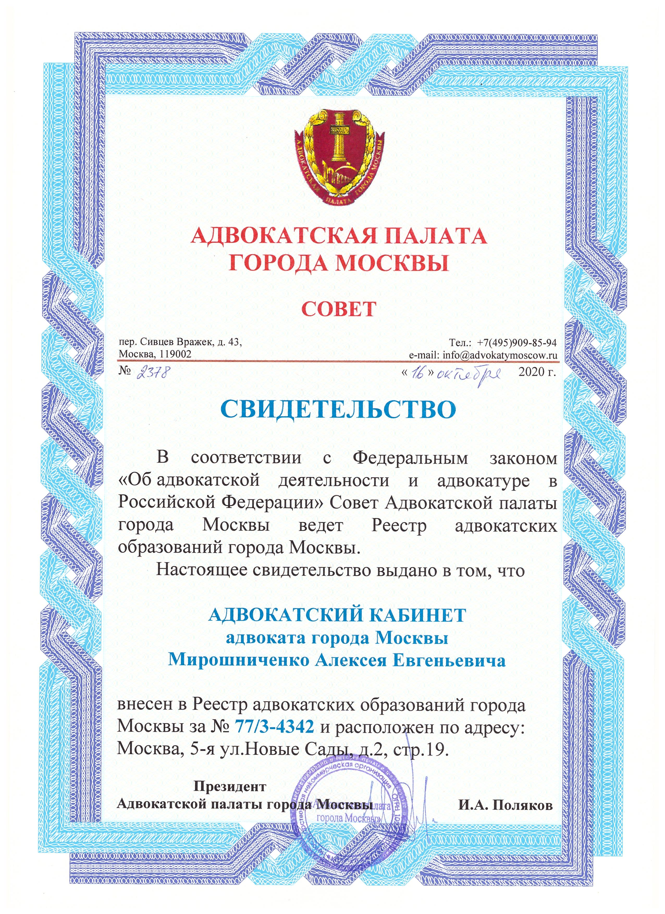

Мирошниченко
Алексей Евгеньевич

СВИДЕТЕЛЬСТВО
ОБ ОТКРЫТИИ КАБИНЕТА

Образование
- В 1986 году окончил юридический факультет Московского государственного университета им. М.В.Ломоносова по специальности правоведение.
Специализация
- Уголовное право и уголовный процесс
- Защита прав человека и основных свобод